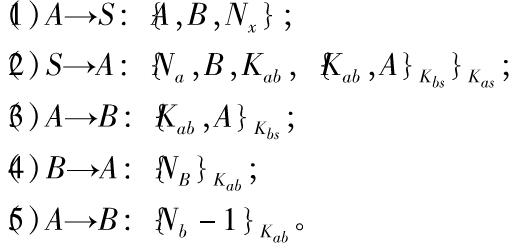
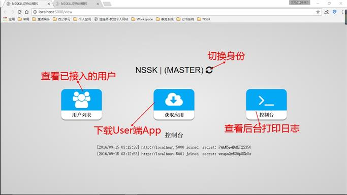
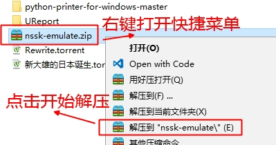

计1403 41455077 陈正
- 1. A向服务器S发送自己和要通信目标的标识和一个随机数Na
- 2. 然后服务器S返回给A一个A和S对称密钥加密的内容，包括：随机数Na、目标B的标识、AB的会话密钥和用服务器和B的对称密钥加密的内容，其中包括：AB的会话密钥，和A的标识。
- 3. A用和服务器共同的对称密钥解密出结果后，判断随机数Na是否正确，正确后向B发送用服务器和B的对称密钥加密的内容，其中包括：AB的会话密钥，和A的标识。
- 4. B用和服务器共同的对称密钥解密出结果后，用AB的会话密钥加密一个随机数Nb。
- 5. A收到解密后将这个随机数-1后重新发送给B，B解密后若正确，则A和B的保密通信即可建立。
- > 和服务器的通信由于需要加密的数据量小，可以采用RSA来实现。A和B之间通信的数据量较大，可以采用AES实现。
设计：NSSK-Emulate仿真要点
【需求分析：实现NSSK认证的仿真模拟】
- 1. Master端提供User端之间的接入与认证，提供app的下载
- 2. User端可以发起或接受创建安全加密连接的请求
- 3. 遵循NSSK协议建立安全连接，展示认证流程
- 4. User之间安全连接建立后可以相互以密文通讯
设计：NSSK-Emulate仿真要点
【需求分析：实现NSSK认证的仿真模拟】
- 5. 通讯内容采用AES对称加密，解密后展示在前端
- 6. Master同时也具有User身份，User也可以与自己建立连接并通讯
- 7. 基于上一条原理，S、A、B三端可以分别部署，也可部署在同一个节点演示
- 8. User可以作为其他User的Master，彼Master地址指向此通讯地址
按照以上分析，选取合适的技术
实现以上功能点，完成仿真模拟
技术选择：
1. 客户端
以网页形式展现，由前端Web页面+后端本地Server组成
技术选择：
2. 前端Web页面
基于H5CSS3，引入`Jquery`，通过`Ajax`调用起后端服务
2. 后端Server基于`Macaron`框架，提供前端接口，收发各个角色间的通讯
3. NSSK协议中对称加密采用AES算法，16位密钥，基于Go官方标准库`"crypto/aes"`
技术选择：
3. 后端Server
基于`Macaron`框架，提供前端接口，收发各个角色间的通讯
技术选择：
4. NSSK协议中对称加密
采用AES算法，16位密钥，基于Go官方标准库`"crypto/aes"`

【使用说明】
首先要部署一个Master端app

【使用说明】
点击中央按钮获取并启动User端App


【使用说明】
创建User之间的安全加密连接

【使用说明】
User之间通过安全连接使用密文通讯
【使用说明】
User之间通过安全连接使用密文通讯